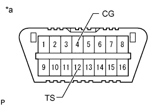
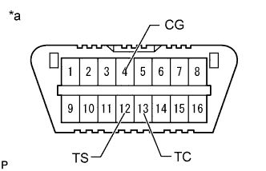

AIR SUSPENSION SYSTEM > TEST MODE PROCEDURE |
| SIGNAL CHECK (WHEN USING INTELLIGENT TESTER) |
Turn the engine switch off.
Connect the intelligent tester to the DLC3.
Start the engine.
Turn the intelligent tester on.
Enter the following menus: Chassis / Air suspension / Utility / Signal Check.
Check the display of the multi-information display and confirm that the system is in test mode.
Check each item in the table below by performing the corresponding operation.
| Check Item | Operation |
| Absorber control switch signal | Slowly move absorber control switch from COMF to SPORT and then COMF |
| Height control switch signal | First press "up" on height control switch and then press "down" |
| Height control OFF switch signal | Turn height control OFF switch from on to off |
Read the test mode DTCs by following the prompts on the intelligent tester screen.
Check the malfunction using the Test Mode DTC Chart below. After completing test mode, disconnect the intelligent tester and turn the engine switch off.
| SIGNAL CHECK (WHEN USING SST CHECK WIRE) |
Turn the engine switch off.
|  |
Using SST, connect terminals 12 (TS) and 4 (CG) of the DLC3.
| *a | Front view of DLC3 |
Turn the engine switch on (IG).
Check the display of the multi-information display and confirm that the system is in test mode.
|  |
Using SST, connect terminals 13 (TC) and 4 (CG) of the DLC3.
| *a | Front view of DLC3 |
Check each item in the table below by performing the corresponding operation.
| Check Item | Operation |
| Absorber control switch signal | Slowly move absorber control switch from COMF to SPORT and then COMF |
| Height control switch signal | First press "up" on height control switch and then press "down" |
| Height control OFF switch signal | Turn height control OFF switch from on to off |
Read the output test mode DTCs that are displayed on the multi-information display.
Check the malfunction using the Test Mode DTC Chart below.
After completing test mode, disconnect SST and the engine switch off.
| TEST MODE DTC CHART |
If a trouble code is output during the test mode DTC check, check the trouble areas listed for that code. For details of each code, refer to "See page" for the respective "DTC Code" in the chart.
| DTC Code | Diagnosis | Trouble Area | See page |
| C1791/91 | Absorber Control Switch Circuit |
|
Click here
|
| C1792/92 | Height Control Switch Circuit |
|
Click here
|
| C1794/94 | Height Control OFF Switch Circuit |
|
Click here
|
| C1796/96 | Front Acceleration Sensor RH Malfunction |
|
Click here
|
| C1797/97 | Front Acceleration Sensor LH Malfunction |
|
Click here
|
| C1798/98 | Rear Acceleration Sensor Malfunction |
|
Click here
|